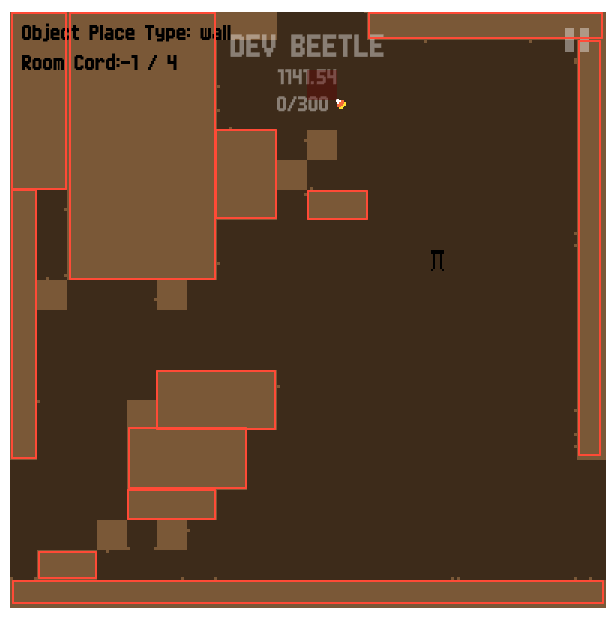
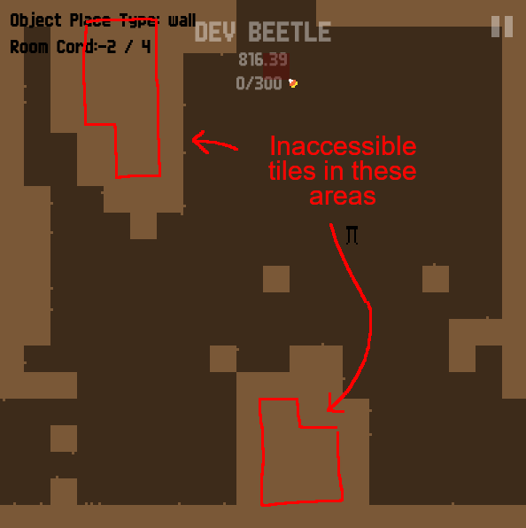

Play Beetle Race
Play Beetle Race November 2019
Beetle Race is a platformer where you navigate an underground maze collecting candy corn. You can play as four different beetles that have different styles of movement.
I wanted to make a game that would be fun to speedrun (complete from start to finish as fast as possible). I think fun speedrunning games should give the player a lot of options to consider when strategizing, so I made a nonlinear map with rooms that you can navigate in any order, as any playable character. The goal is to collect 300 pieces of candy corn, so you'll have to decide which pieces to collect and which to ignore. At the end, your final time is scored with a bronze, silver, gold, or platinum trophy. Mapping out the fastest route in a game is called "routing" in speedrun communities.
A diagram of a speedrunning route for the game Hollow Knight:

Speedrunners often use a strategy called "death abusing", where they die in the game on purpose, often to reset their position or to undo the effects of a glitch. That's why, in Beetle Race, there is no lives system. Instead, if you die by falling in poison, you'll respawn at the top of the room you're in, so there's lots of opportunities for death abuse (sometimes, you might even have to use it). This also made it simpler for me to design and code the game.
The idea to have swappable characters with different abilities might have been inspired by Little Big Planet 3, which has four playable characters with different styles of movement. Sackboy can climb, Swoop can fly, Oddsock can run and wall-jump, and Toggle can change size. I probably took inspiration from other games too.

No game engine
This game was not made with a game engine. Instead, it was made with the P5JS Javascript library, which is designed for creative coding, and is sometimes used to make simple games. A game made this way might have issues depending on your web browser (Chrome is recommended). Without a game engine, I also had to program things like player collision and movement from scratch, and I had no level editor, so I had to program my own level editor into the game.
If you open up your browser's developer console (press F12 in Chrome) and type the command devMode = true (case-sensitive), you can use my level editor yourself. You can click on the screen to place walls and press 'F' to swap between different kinds of beetles, including a "Developer Beetle" that allows you to clip through walls and explore outside of the playable area (where you might find some unfinished rooms).
But that feature was never intended for players, so there isn't a simple or convenient way to save or load the levels you build.
Poor level design
Before making this game, I had no experience with level design, and you might be able to tell. A lot of rooms feel awkward and frustrating to navigate, no matter what beetle you play as.
Poorly optimized
The rooms are built out of a grid of square tiles, which means that when the player moves, the game has to calculate whether the player is colliding with any of those tiles. If there are too many tiles to calculate, it will slow down the game. That's why the map is divided into rooms: so the code doesn't have to worry about checking tiles that aren't in the current room.
A smarter solution would be to manually or automatically group tiles together into larger collision boxes, so that overall, there are fewer boxes to check:
I don't think there's a proper term for this. I just call it "boxifying", and I'm not the first person to think of it. I did ultimately create a boxifying algorithm for a later game prototype that also used tiles.
Beetle Race also wastes energy checking for collision with tiles that the player could never collide with. I was aware of this when I made the game, but I decided at the time that it wasn't worth fixing. Instead, I tried to build levels that used few enough wall tiles that it didn't affect performance.
The two things I'm probably the most happy with in this game are the particle effects on the ground (which behave differently for every beetle), and the sound effects (made with a tool called bfxr).